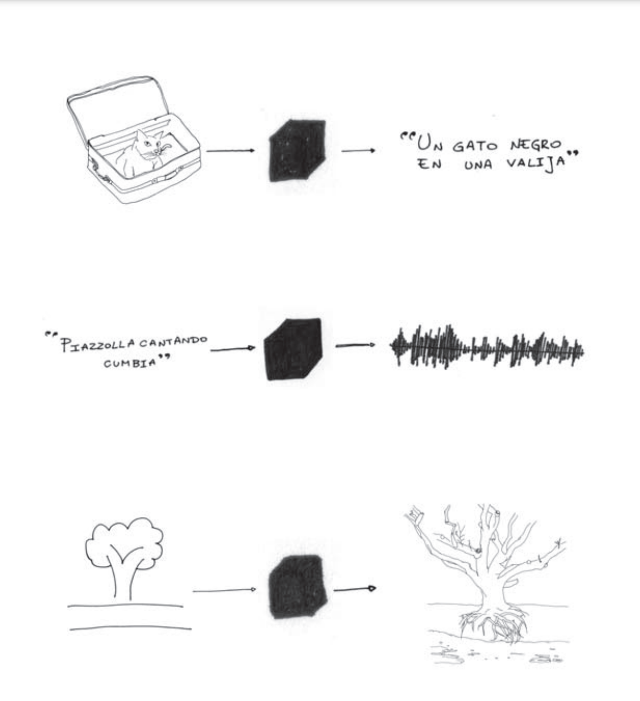
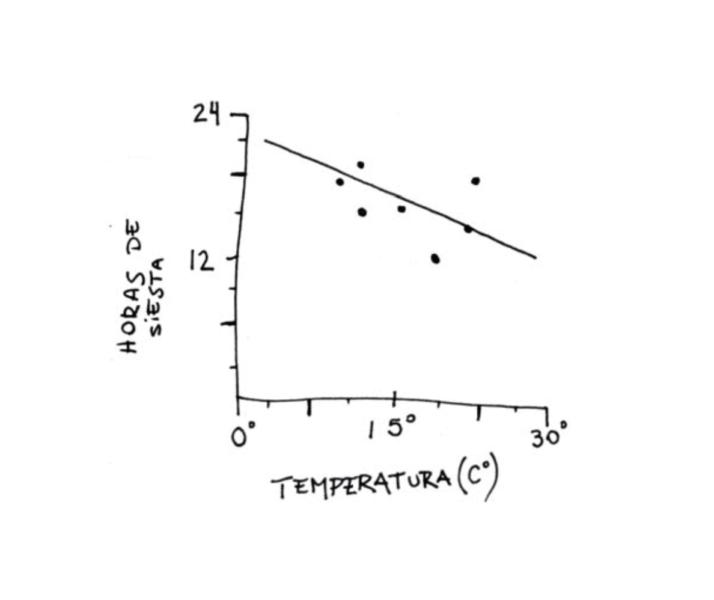
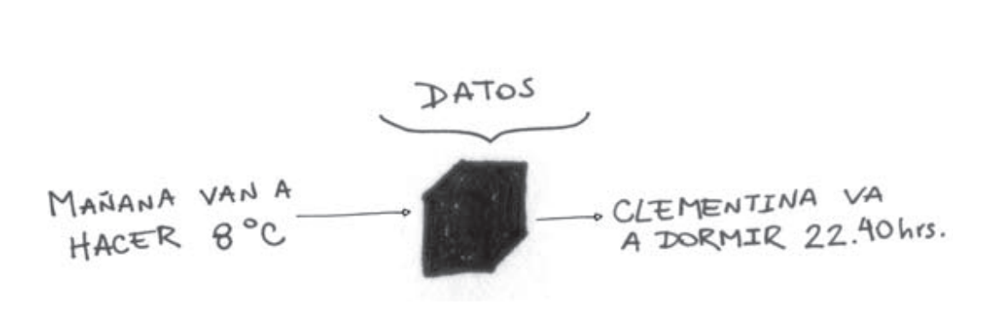
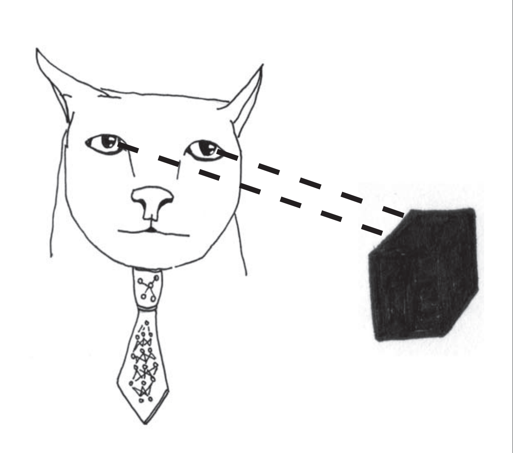
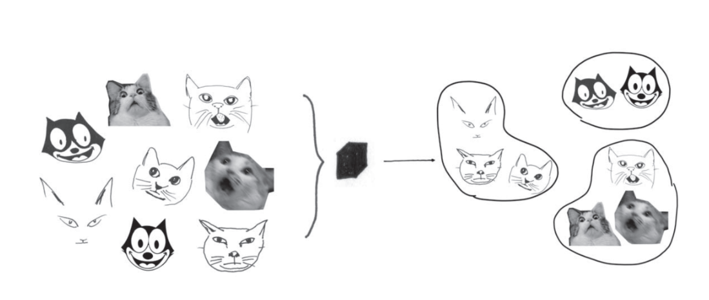
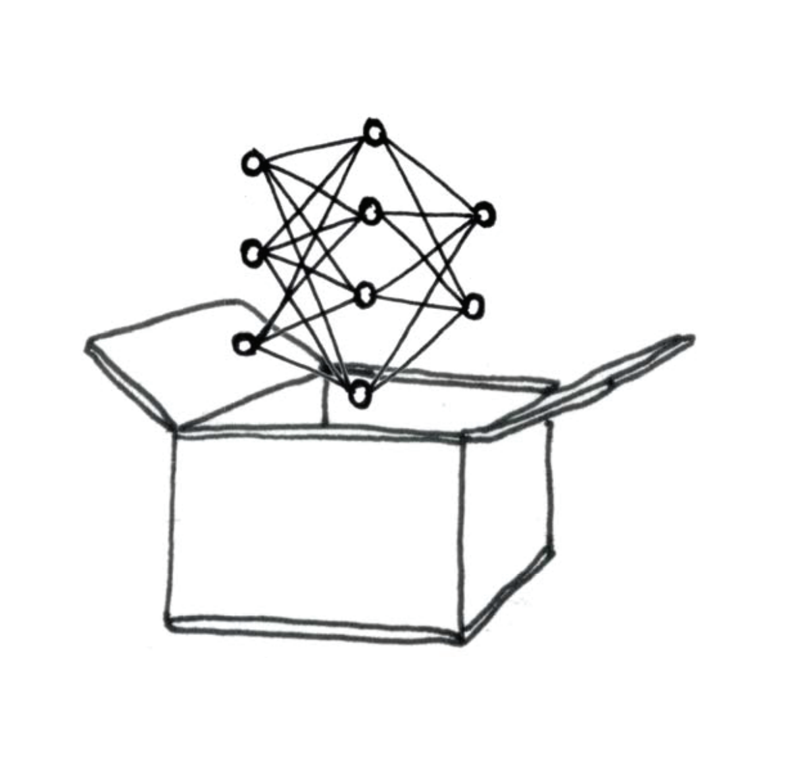
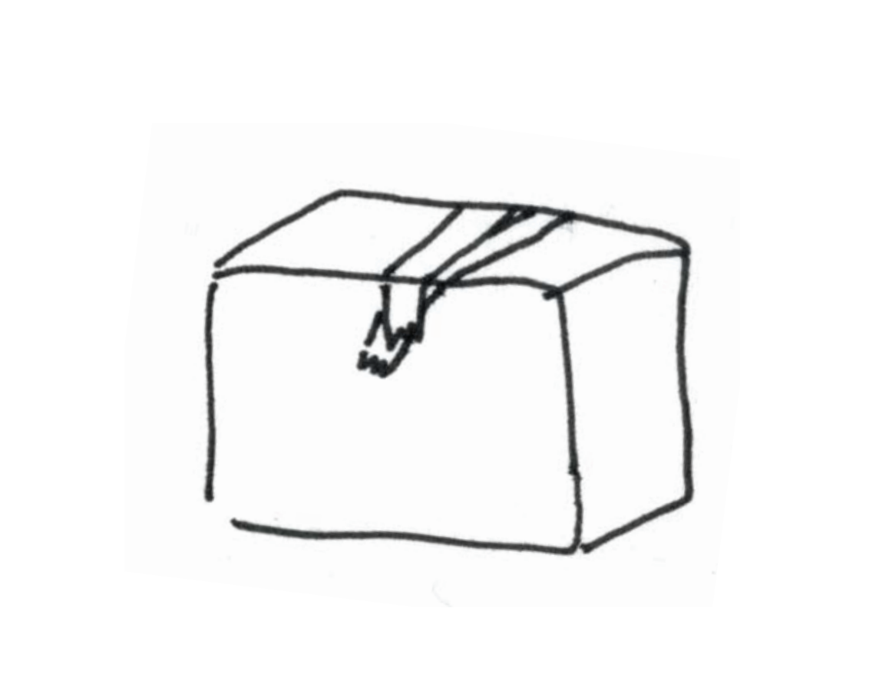

Anatomía y política de una caja negra
Cuando surjan disputas, no habrá necesidad de debatir más; simplemente digamos: calculemos.
La máquina analítica no tiene pretensiones de originar nada. Puede hacer lo que sepamos ordenarle que
ejecute… pero puede seguir análisis, y hacerlo para cantidades más allá del número.
Computar es recorrer un laberinto que tiene una única solución.
Programar es diseñar un laberinto que muta de tal manera que ciertas entradas corresponden con
salidas específicas.
OR
Conexión en paralelo
Cierra el circuito cuando cualquiera de sus
entradas es verdadera
A
B
Resultado
F
F
F
F
V
V
V
F
V
V
V
V
AND
Conexión en serie
Cierra el circuito cuando ambas entradas son
verdaderas
A
B
Resultado
F
F
F
F
V
F
V
F
F
V
V
V
NOT
Invierte la señal
Cierra el circuito cuando su entrada es falsa
"Quiero un gato macho, castrado, blanco o beige;
o una gata hembra, castrada, de cualquier color excepto blanco;
o aceptaré cualquier gato que tengas siempre que sea negro."
Variable
Significado
M
Macho (Male)
F
Hembra (Female)
N
Castrado (neutered)
W
Blanco (white)
T
Naranja (tan)
B
Negro (black)
M AND N AND (W OR T )
OR F AND N AND !W
OR B
(M AND N AND (W OR T ))
OR (F AND N AND !W )
OR B
(M AND N AND (W OR T ))
OR (F AND N AND !W )
OR B
Gato macho naranja sin castrar
Gata hembra blanca castrada
Gata hembra gris castrada
finalmente podriamos armar un panel donde esos interruptores y la salida estén todos juntos y rotulados.
Prototipo para demostrar el uso de relés electromecánicos para realizar cálculos binarios.
Es una calculadora de 2 bits.
La K viene "kitchen table", donde la ensambló
https://www.computerhistory.org/timeline/1937/#169ebbe2ad45559efbc6eb35720eb5ea
Problemas de velocidad de los relés
Eniac, 1945
cálculos para la bomba de hidrógeno
17,000 vacuum tubes
Eniac, 1945
cálculos para la bomba de hidrógeno
17,000 vacuum tubes
Eniac, 1945
cálculos para la bomba de hidrógeno
17,000 vacuum tubes
Eniac, 1945
cálculos para la bomba de hidrógeno
17,000 vacuum tubes
Primer transistor. Bell Labs, 1947
Se usa un material que se llama semiconductor, que conduce electricidad en ciertas condiciones y en otras no.
90.000.000.000 𐀷
En este momento están sentados sobre esta cantidad de transistores.
VIDEO
El primer paso es conseguir arena. mucha.
Este es decorativo, uno real costaria aprox 100 mil dólares.
wafers/oblea de silicio
Hasta acá solamente tenemos unos discos de semiconductor puro. falta agregarles las puertas lógicas y transistores
Your browser does not support the video tag.
El proceso de fotolitografía utiliza luz ultravioleta para transferir patrones a la oblea de silicio usando un estencil, como si fuera un graffiti.
Computadoras que no requieren electricidad
Si todo lo que necesitamos para computar son las puertas lógicas, podemos pensar en computadoras que funcionen sin electricidad, utilizando distinto tipos de laberintos
VIDEO
En este video de ejemplo es una suma binaria de 7+15. (saltar a 13:35)
Si los medios son extensiones de los sentidos, también lo son de la tierra
Siguiendo a McLuhan, podemos decir que "la materia es el mensaje"
Baotou, Mongolia Interior, China
Kate Crawford en Atlas de la Inteligencia Artificial:
VIDEO
Baotou, Mongolia Interior, China
Dice Tim Maughan: "China suminstra el 95% de los minerales de tierras raras del mundo. Su dominio en el mundo
le debe menos a la geología que a la disposición de ese país de asumir el daño ambiental de la extracción."
El primer día que salió a la venta agotó el stock mundia de 1 millón de unidades que tenían.
Cobalto
En el año 2000 el valor del cobalto saltó de $30 a $380 por libra
VIDEO
Infrarrojo usado por ejercito eeuu en los 40s para detectar camuflaje.
Refleja la clorofila, las plantas verdes.
congo 5M muertos. Hcae visible lo invisible
Palaquium gutta
Este arbol Palaquium Gutta tuvo un rol clave en la expansión colonial inglesa.
El Reino Unido tenía un problema de control sobre un territorio demasiado extenso y las noticias y ordenes tardaban demasiado
en ir y venir en barco. Tenían una extensa red de tendido de telégrafo pero era susceptible a sabotaje o que un rayo parta una columna.
Entonces tuvieron la gran idea de poner todo el tendido de cable por abajo del mar. Obviamente tenían un problema de insulación y ahí entra
el latex de guttapercha.
1842 (malasia)
100 millones de árboles tuvieron que ser talador para el trazado del cable. Para 1900 casi desapareció del mapa. Asi quedó virtualmente extinto.
Y dejó una herencia de infraestructura sobre el trazado de cables de internet. No es arriesgado decir que el trazado de cables de internet sigue la lógica de trazado colonial.
Es una red para el control.
De hecho esta lógica de control y dominación está inscrita en el lenguaje mismo de la computación.
El protocolo TCP/IP fue desarrollado por el departamento de defensa de EEUU para tener una red de comunicación que no dependiera de un nodo central.
En caso de guerra nuclear, la red podía seguir funcionando.
Sobre esta idea de la post descentralización habla Galloway en Protocol.
TCP/IP HTTP DNS
Estos son algunos de los protocolos fundantes de internet.
Segun Galloway, estos protocolos no son neutrales, sino que están imbuidos de relaciones de poder.
Así como el trazado de cables fue una forma de control colonial, los protocolos digitales son formas actuales de control, pero más invisibles.
RÉGIMEN DE INFORMACIÓN
Byung Chul Han habla de un regimen moderno de control. Y en el centro de ese regimen estan los datos.
Vigilancia y castigo → Motivación y optimización
Walter Benjamin decía: Los primeros planos o la cámara lenta harían visibles los micromovimientos y las microacciones que escapan al ojo humano. Sacarían a la luz un espacio inconsciente: “Solo aprendemos sobre el inconsciente óptico a través la cámara, como aprendemos sobre el inconsciente instintivo a través del psicoanálisis. La cámara permite acceder a una forma especial del inconsciente. Lo llamo “Inconsciente óptico”.
Byung dice: Hoy el big data y la IA son esa lupa que descubren el inconsciente digital. La acumulación y la superposición de datos ponen al régimen de información en condiciones de influir en nuestro comportamiento por debajo del umbral de la consciencia.
Y a qué se refieren con esto?
OCEAN
openness
conscientiousness
extraversion
agreeableness
neuroticism
OCEAN por sus siglas es un modelo psicográfico que a partir de un input de interacciones de un usuario puede generar un modelo predictivo de personalidad
Entonces las interacciones digitales (likes, fueguitos, comentarios, engagement, etc) toda huella digital se usa para generar estos mapas que describen la psicología de cada individuo. Distintas empresas seguro usan variaciones de este modelo o lo alimentan con más información.
Aventurera. Abierta un poco neurótica ama la variedad
Publicidad que dice la libertad debe estar protegida de amenazas externas
protector. Agradable extrovertido piensa en los demas
Las armas son esenciales para cuidar a los demás
Concienzuda y abierta es una líder natural
Publicidad sobre Como proteger a su familiar y su futuro.
Acá entra Cambridge Analytica que utilizó este modelo para segmentar audiencias y crear perfiles psicológicos detallados de toda la población.
Primero lo hicieron para la primera elección de Trump y acá también operaron en la campaña de Bolsonaro y la de Macri en 2015.
Byung : Los medios electrónicos son medios de masas en el sentido de que producen un hombre-masa: El hombre masa es el habitante electrónico del globo terráqueo y al mismo tiempo esta conectado con todos los demás hombres, como si fuera un espectador en un estadio deportivo global. El hombre masa no tiene identidad. Es nadie. Los medios digitales ponen fin a la era del hombre masa. El habitante del mundo digitalizado ya no es ese nadie. Mas bien, es alguien con un perfil. Mientras que en la era de las masas solo los delincuentes tenían un perfil, el régimen de la información se apodera de los individuos mediante la elaboración de perfiles de comportamiento.
La crisis de la verdad se extiende cuando la sociedad se desintegra en agrupaciones o tribus entre las cuales ya no es posible ningún entendimiento, ninguna designación vinculante de las cosas.
Byung Chul Han
Kabba (cubo) de la meca. Preguntar que lo describan en su morfología.
La transparencia es el imperativo sistémico del régimen de la información: todo debe presentarse como información.
Transparencia e información son sinónimos. La sociedad de la información es la sociedad de la transparencia. El imperativo de la transparencia permite que la información circule con libertad. No son las personas las realmente libres, sino la información. La paradoja de la sociedad de la información es que las personas están atrapadas en la información. Ellas mismas se colocan los grilletes al comunicar y producir información. La prisión digital es transparente.
10 Skies - James Benning
Hablamos de infraestructura y protocolos de control y ahora sumamos esta noción de que la transparencia surge como un valor.
Creo el mayor ejemplo de esta mirada surge en la nube. (preguntar que es la nube)
centro de datos de facebook en construccion en Louisiana (Hyperion)
Hanne Darboven - Cultural History 1880–198
Cultural history
Historia cultural propia.
1.589 obras enmarcadas individualmente en papel 50 x 70 y 19 elementos escultóricos ocupan 650 m2. La obra mezcla referencias culturales, sociales e históricas con documentos autobiográficos, postales, pin-ups de estrellas de cine y rock, referencias documentales, guerras, diagramas geométricos para tejidos y un sampleo de puertas de Nueva York.
Reminiscencias a Aby Warburg pero para contar una historia propia a través del recorte y el montaje
Ella usaba números como "una forma de escribir sin describir”. Darboven comenzó a crear dibujos basados en la suma de los dígitos que forman una fecha (día + mes + año). Como un diario intimo, su trabajo documenta su vida, pero su uso de procedimientos matemáticos asegura que su historia personal se mantenga privada.
Machine learning, o aprendizaje automático es
aprender una función, o serie de pasos que mapea
datos de un dominio a otro

Para construir una red de aprendizaje automático lo primero que se necesitan son datos. Muchos. Este es un registro de cuántas horas durmió mi gata por día y qué temperatura hizo ese día.
Regresion Lineal

Dibujé una línea por dónde habían más puntitos. Si la sigo puedo aproximar cuánto va a dormir cuando hayan 0 grados, aunque eso nunca haya pasado. Esa línea se llama regresión lineal.

Entonces podemos pensar en estas cajas negras como grandes contenedores de datos. Que dado una variable inicial pueden HACER UNA PREDICCIÓN.
Entrenamiento Supervisado

El objetivo es aproximar una función de mapeo tan cerca, que cuando tenemos nuevas variables de entrada, pueda predecir una de salida.
Parecido al primer ejemplo que di. Se da un problema y tambien su solucion. Entonces cuando tenga un nuevo problema sea va a acercar a la manera de resolver anterior. Cuantos más ejemplos tenga, mejor va a ser la solución. El problema es que esos datos de entradas van a ser su sesgo
Entrenamiento No Supervisado

Cuando se meten todos los datos, pero sin relación de entrada y salida.
El algoritmo aprende qué patrones y características se repiten y las usa para agrupar los datos. En este ejemplo metí un montón de gatitos. La salida es una agrupación según características que aprendió solo.

El resultado de la función aprendida es una red neuronal entrenada. Las variables de entrada se conectan con nodos llamados neuronas. Cada conexión puede o no activarse, como una sinápsis.
Las redes neuronales son una caja negra. Una vez entrenada, no hay forma real de saber cómo funciona internamente, simplemente se ingresan valores y ésta devuelve resultados.



 Prototipo Model K de George Stibitz, 1937
Prototipo Model K de George Stibitz, 1937


 Lingote de silicio puro
Lingote de silicio puro